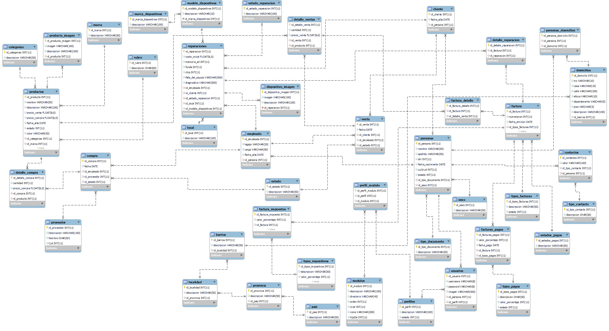

Al tomar la decisión de rediseñar por completo la base de datos, este
proceso implica una revisión
exhaustiva de la estructura actual, la implementación de medidas para estabilizarla y la
incorporación
de datos faltantes. Al realizar esta transformación, buscamos no solo optimizar la accesibilidad a
la
información, sino también garantizar la consistencia y confiabilidad de los datos, permitiendo a G2
Accesorios maximizar su productividad y mejorar la calidad de sus servicios.
Base de datos Rediseñada
La base de datos rediseñada cuenta con una gran cantidad de tablas
correspondientes las cuales
tomaremos
las que consideramos mas importantes como:
Productos
Productos pone como principal punto su clave primaria seguidos de dos
claves secundarias las cuales
corresponden a las tablas de la categoria y marca.
producto tiene la capacidad de abordar datos de los precio ya sea de venta como de compra ,la fecha
de
ellos , el estao y el color en el cual se encutra disponible
Ventas
Venta posee su clave primaria seguido de 3 claves secundarias las cuales
son la de El cliente, el
empleado que ejecuto la venta y y el estado
Usuario
En la tabla usuario nos encotramos dos campos importantes que son la de
username y password las
cuales
estarian vinculadas a las tablas de persona y perfil
Reparaciones
En el apartado de reparacionesabarca un grupo muy importante referido a
esto ya que se encarga de
acumular los datos de el coste de reparacion,funda ,memorias ,estado en el que llego,problemas etc.
Esta tabla cuenta con claves secundarias como la de el empleado que lo recivio ,el local donde se
hizo
la entrega y modelo de dispositivos
Nueva base de datos
